Top Destinations
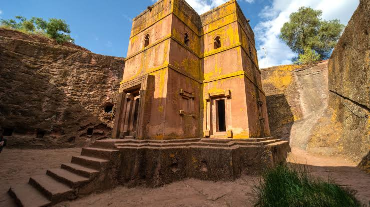
Lalibela
Lalibela is one of the most famous historical and religious destinations in Ethiopia. It is best known for its rock-hewn churches, which were carved directly out of solid volcanic rock more than 800 years ago.

Axum
Axum is one of the oldest cities in Ethiopia and is famous for being the center of the ancient Aksumite Kingdom. This kingdom existed many centuries ago and was one of the most powerful civilizations in Africa. Axum played an important role in trade, connecting Africa with the Middle East and other parts of the world through goods like gold, ivory, and spices. Axum is also very important in religion and culture. It is known as one of the first places in Africa to accept Christianity in the 4th century during the time of King Ezana. One of its most famous religious sites is the Church of Our Lady Mary of Zion, which is very sacred for Ethiopian Orthodox Christians. Many people believe the Ark of the Covenant is kept in Axum, which makes the city even more special.<\p>
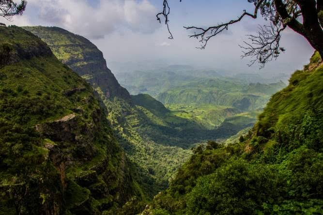
Simien Mountains
The Simien Mountains (often called the Semien Mountains) are one of Ethiopia’s most famous highland mountain ranges, located in the northern part of the country in the Amhara Region. They are known for their dramatic landscapes, deep valleys, sharp cliffs, and very high plateaus that were formed by volcanic activity and erosion over millions of years. The highest peak is Ras Dashen, which is also the highest mountain in Ethiopia. A major
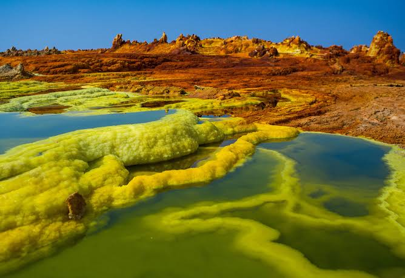
Danakil Depression
The Danakil Depression is one of the hottest and lowest places on Earth, located in the northeastern part of Ethiopia near the border with Eritrea and Djibouti. It is part of the Afar Triangle and lies below sea level, making it a unique geological area. The region is extremely dry and hot, but it is also rich in minerals like salt and sulfur. Despite the harsh conditions, the Afar people have lived there for centuries, especially working in traditional salt mining.About Us
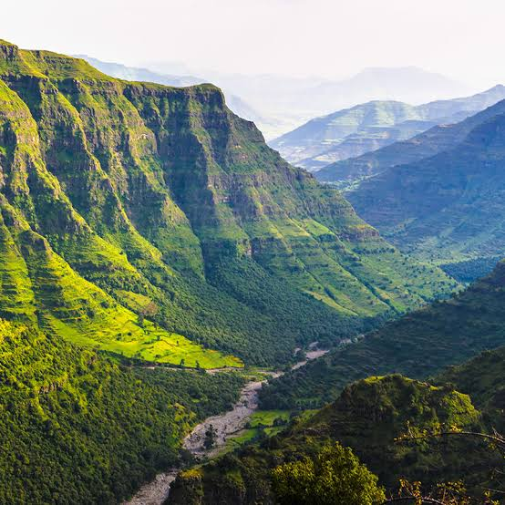
Ethiopia Tourism is a platform dedicated to showcasing the beauty, history, and culture of Ethiopia. We aim to help travelers from all over the world discover one of the oldest and most unique civilizations on Earth.
From the ancient rock-hewn churches of Lalibela to the historic city of Axum, the stunning landscapes of the Simien Mountains, and the extreme beauty of the Danakil Depression, Ethiopia offers unforgettable travel experiences.
Our mission is to promote safe, affordable, and enjoyable tourism experiences by connecting travelers with the best destinations, guides, and cultural insights across Ethiopia.
Whether you are a solo traveler, a family, or a group, we are here to help you explore Ethiopia with confidence and excitement.
Ethiopian Culture
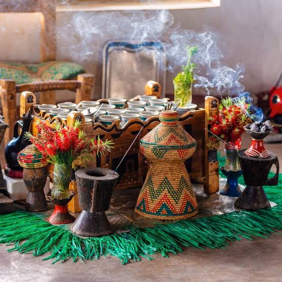
coffee Ceremony
Ethiopia is the birthplace of coffee. The traditional coffee ceremony is an important part of Ethiopian hospitality and culture.
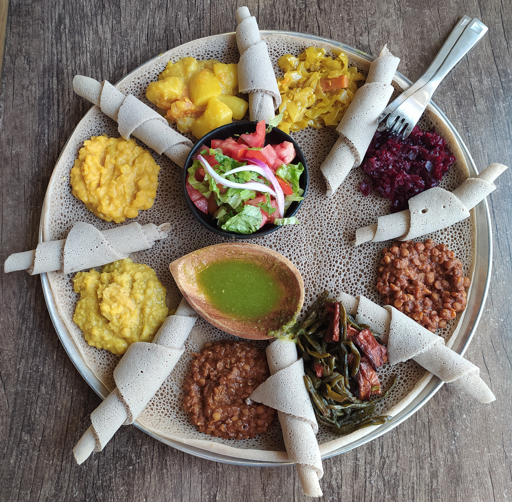
Traditional Food
Injera is Ethiopia’s most famous food, served with different traditional stews called wot. Ethiopian cuisine is rich in flavor and history.
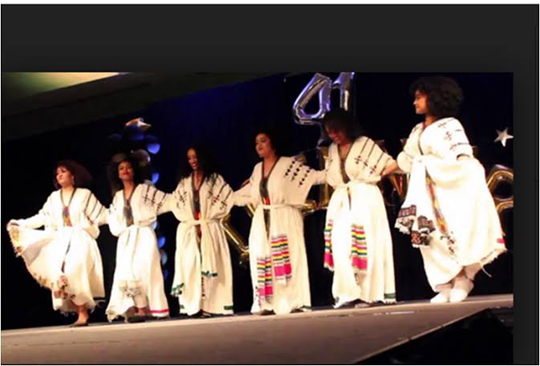
Traditional Dance
Ethiopian cultural dances are colorful and energetic, with unique shoulder movements and traditional music.
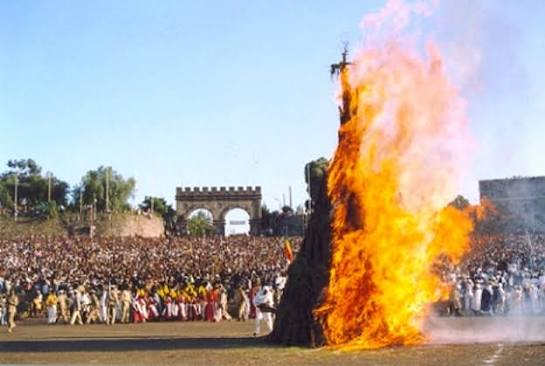
Festivals
Ethiopia celebrates many religious and cultural festivals such as Timkat, Meskel, and Genna with joyful ceremonies.
Ethiopia Gallery
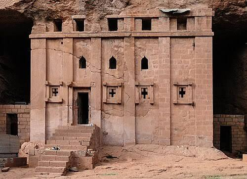
Lalibela
Axum
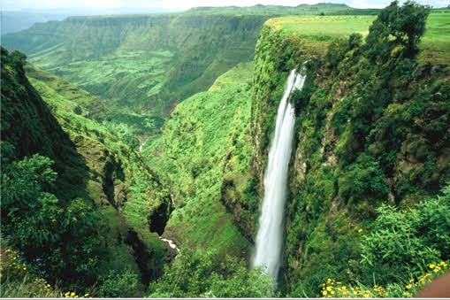
Simien Mountains
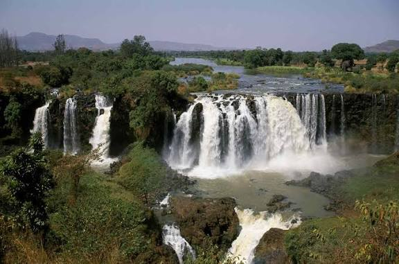
Blue Nile Falls
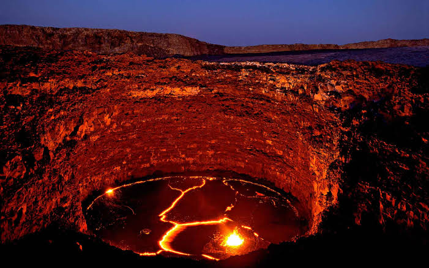